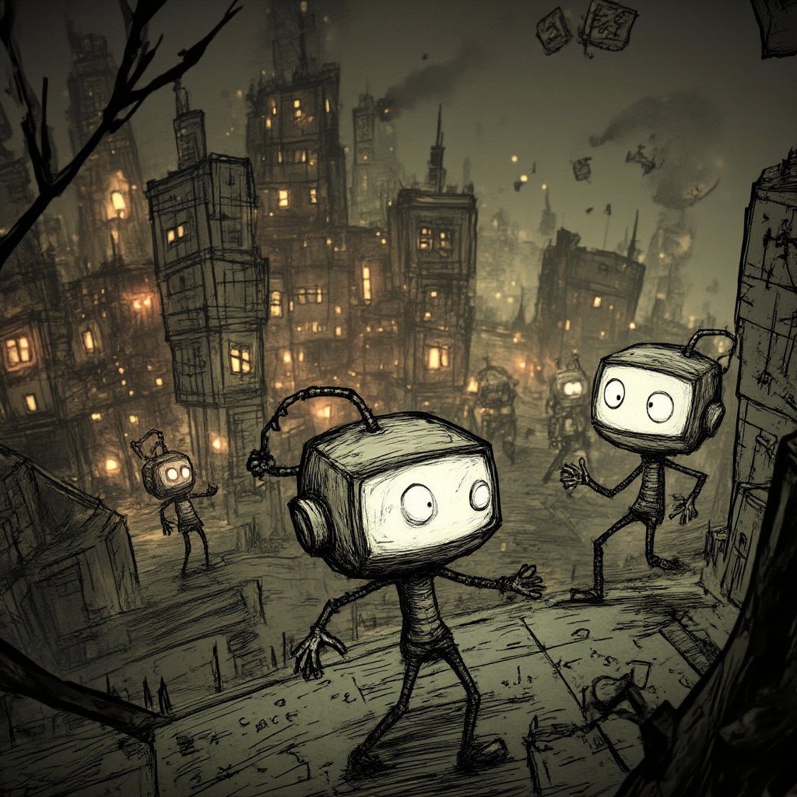

|
⚙ As the boundaries between the physical and the virtual continue to blur, the artist's role has evolved to encompass the curation and interpretation of these AI-generated worlds, imbuing them with deeper meaning and emotional resonance. ⚙ The future of art lies in the symbiotic relationship between the artist and AI, a dynamic partnership that promises to redefine the very nature of creativity and push the boundaries of artistic expression. |
|

Nov. 2024 |
The Artistic Algorithm: Hacking the Creative Code"Inspired by the infinite possibilities of the virtual realm, the Artist's journey is one of unparalleled exploration, where the boundaries of what is possible are continuously redefined. They are the visionaries, the pioneers, the guardians of a new artistic frontier, beckoning us to venture into the unknown and embrace the boundless potential of the cyberspace". "But the true genius lies in the artist's ability to imbue these digital constructs with an essence of life, a spark of emotion that defies the cold logic of their creation. It is a dance of left-brain and right-brain, where mathematical proofs and artistic intuition converge to birth something truly remarkable". |